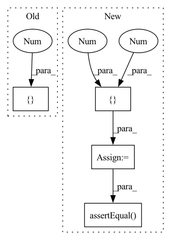

Pattern ID :24454
Before Change
def test_ood_metric(self):
a = ood_utils.OODMetric("msp")
scores = [0.6 , 0.1After Change
metric_name = "msp"
ood_metric = ood_utils.OODMetric(metric_name)
scores = [0.2, 0.4, 0.35, 0.1]
labels = [ 0, 0, 1 , 1 ]
ood_metric.update(scores, labels)
self.assertEqual(metric_name, ood_metric.get_metric_name())
self.assertEqual( (scores, labels), ood_metric.get_scores_and_labels())
self.assertDictEqual(
ood_metric.compute_metrics(),
{
"auc-roc": 0.25,In pattern: SUPERPATTERN
Frequency: 3
Non-data size: 4
Instances Fragment ID: 76007431
Project Name: google/uncertainty-baselines
Commit Name: 7d318b09c94f56b28ea3a60897a6e4b5143cc611
Time: 2021-09-08
Author: jjren@google.com
File Name: baselines/jft/ood_utils_test.py
M Class Name: OodUtilsTest
N Class Name: OodUtilsTest
M Method Name: test_ood_metric(1)
N Method Name: test_ood_metric(1)
M Parent Class: tf.test.TestCase
N Parent Class: tf.test.TestCase
M File Name: baselines/jft/ood_utils_test.py
N File Name: baselines/jft/ood_utils_test.py
M Start Line: 31
M End Line: 35
N Start Line: 31
N End Line: 46
Before Change
// Test concat (values joined into single string) merge
task.merge = "concat"
workflow = Workflow([task])
results = list(workflow([2 ]))
self.assertEqual(results, ["4. 8"])
// Test generated (id, data, tag) tuples are properly returnedAfter Change
// Test no merge
task.merge = None
results = list(workflow([2 , 4, 6 ]))
self.assertEqual( results, [[4, 16, 36], [8, 64, 216]])
// Test generated (id, data, tag) tuples are properly returned
workflow = Workflow([Task(lambda x: [(0, y, None) for y in x])])
results = list(workflow([(1, "text", "tags")])) Fragment ID: 76007447
Project Name: neuml/txtai
Commit Name: 97f7976b82b8f259e5b774abbe4e8738b95cd1b4
Time: 2021-11-26
Author: 561939+davidmezzetti@users.noreply.github.com
File Name: test/python/testworkflow.py
M Class Name: TestWorkflow
N Class Name: TestWorkflow
M Method Name: testMergeWorkflow(1)
N Method Name: testMergeWorkflow(1)
M Parent Class: unittest.TestCase
N Parent Class: unittest.TestCase
M File Name: test/python/testworkflow.py
N File Name: test/python/testworkflow.py
M Start Line: 109
M End Line: 126
N Start Line: 123
N End Line: 143
Before Change
with tfds.testing.mock_data(num_examples=100, data_dir=data_dir):
ids, test_accs = active_learning.main(config, output_dir)
self.assertAllClose(test_accs, [0.125 , 0.125After Change
acquisition_method)
// Get the warmup batch
gt_ids = [934744266 , 986104245 ] + gt_ids
self.assertEqual( ids, set(gt_ids))
if __name__ == "__main__":
tf.test.main() Fragment ID: 76007430
Project Name: google/uncertainty-baselines
Commit Name: 8860b03389544858acff3220a052b659cb0c071c
Time: 2021-12-18
Author: git@joo.st
File Name: baselines/jft/active_learning_test.py
M Class Name: ActiveLearningTest
N Class Name: ActiveLearningTest
M Method Name: test_active_learning_script(3)
N Method Name: test_active_learning_script(1)
M Parent Class: parameterized.TestCase,tf.test.TestCase
N Parent Class: tf.test.TestCase
M File Name: baselines/jft/active_learning_test.py
N File Name: baselines/jft/active_learning_test.py
M Start Line: 44
M End Line: 80
N Start Line: 52
N End Line: 92